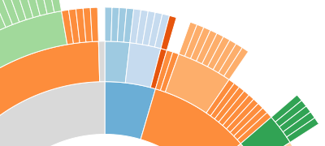

暗黑3 告訴你資料長什麼樣子?
http://goo.gl/4k5pxt
Veck Hsiao @ 2015/12/21
Who am I
Veck Hsiao (蕭奕凱)
露天拍賣網頁工程師
Who am I
GitHub: fbukevin
Open Data
近年來政府單位或組織開放公開資料，促進資料分析、應用與視覺化發展
Data Visualization
將資料集以圖形或動畫的直觀方式呈現
D3.js
- Data-Driven Documents
- by Mike Bostock
- JavaScript 資料視覺化工具
- 類 jQuery 的 DOM 操作方式
- 透過 SVG 或 Canvas 呈現資料樣貌
- 強大的資料處理能力
Who use D3.js
台灣之光

Who use D3.js
台灣之光
Who use D3.js
台灣之光
Technology
<svg>、HTML <canvas>
將資料以圖形方式呈現
Technology
JavaScript
操作與控制資料和圖形元件
Partition
d3 共有 8 大塊：
- Behavior: drag 或 zoom(拉近拉遠)
- Core: select, transit, array, math, data, format, color 等基本資料操作
- Geography: 提供地理資訊的操作
- Geometry: 提供幾何圖形的操作
- Layouts: 提供圖的型態
- Scales: quantitive(量級) 或 ordinal(序性)處理
- SVG: SVG 操作
- Time: 時間資訊的操作
Layout
D3 內建 Layout 類別
- Bundle
- Chord
- Cluster
- Force
- Hierarchy
- Histogram
- Pack
- Partition
- Pie
- Stack
- Tree
- Treemap
D3 內建 Layout 類別 - Hierarchy
The hierarchy layout is an abstract layout that is not used directly.
- d3 wiki
D3 內建 Layout 類別 - Histogram
D3 內建 Layout 類別 - Partition

D3 內建 Layout 類別 - Cluster
D3 內建 Layout 類別 - Treemap
Use D3.js - load library
HTML
<script src="http://d3js.org/d3.v3.min.js"></script>
Use D3.js - select elemet
HTML
<div>red
<div>green</div>
</div>
JavaScript:
d3.select('div').style({ 'color': 'red' });
d3.select('div div').style({ 'color': 'green' });
Use D3.js - select elemet
也可以串著寫：
d3.select('div').style({ 'color': 'red' })
.select('div').style({ 'color': 'green' });
Use D3.js - append element
d3.select('body')
.append('div')
.html('My name is Veck')
.style({
'border':'1px solid #000',
'width':'120px'
});
Use D3.js - append elemet
Draw SVG
插入 <svg> 元素到 <body> 中
d3.select('body')
.append('svg')
.attr({
'width':200,
'height':200
});
Draw SVG
插入 <circle> 到 <svg> 中來畫圖
d3.select('svg')
.append('circle')
.attr({
'cx':50,
'cy':50,
'r':30,
'fill':'#f3b',
'stroke':'blue',
'stroke-width':'5px'
});
Data Visualization by D3.js
選擇 HTML 元素後，我們可以透過 D3.js 的 d3.data() 來載入資料
var dataSet = [1, 2, 3, 4, 5];
d3.select('body').selectAll('div')
.data(dataSet) // load data
.enter() // "show" data element
.append('div')
.text('Hi!');
Data Visualization by D3.js

Data Visualization by D3.js
可以透過 callback function 指定 text 內容
var dataSet = [1, 2, 3, 4, 5];
d3.select('body').selectAll('div')
.data(dataSet) // load data
.enter() // "show" data element
.append('div')
.text(function(d){
return d;
});
Data Visualization by D3.js
Data Visualization by D3.js
幫插入的 <div> 設定樣式
var dataSet = [1, 2, 3, 4, 5];
d3.select('body').selectAll('div')
...
.append('div')
.text(function(d){ return d; })
.style({ 礙於篇幅，請見下頁 });
Data Visualization by D3.js
幫插入的 <div> 設定樣式
// 剛剛的 style 內容
.style({
'color': function(d){ if(d < 4){ return 'red' } },
'width': function(d){ return d*10 + 'px' },
'margin': '2px 0',
'background': 'lightgreen'
});
Data Visualization by D3.js
More
- 改用 Canvas 來加速繪製
- 透過 d3.csv(), d3.json(), d3.tsv() ... 等函式來載入外部資料
- 套用 Layout 來做出各種不同的資料視覺化圖形